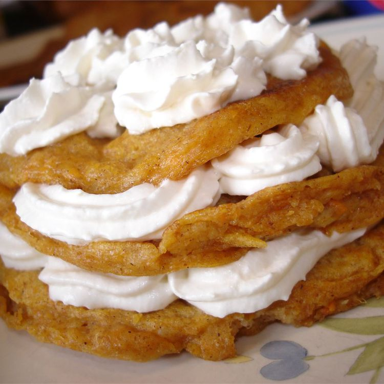

Ingredients
- 3/4 pund sweet potatoes
- 1 1/2 cups all-purpose flour
- 3 1/2 teaspoons baking powder
- 1 teaspoon salt
- 1/2 teaspoon ground nutmeg
- 1 1/2 cups milk
- 1/4 cup unsalted butter, melted
- 2 large eggs, beaten
Steps
-
Bring a medium saucepan of lightly salted water to a boil.
Add sweet potatoes and cook until tender but still a bit firm,
about 15 minutes. Drain, then immediately immerse in cold water
to loosen skins. Drain again; remove and discard skins.
-
Sift flour, baking powder, salt, and nutmeg together
into a medium bowl.
-
Chop sweet potatoes, transfer to another medium bowl,
and mash. Mix in milk, melted butter, and egg.
Gradually mix in flour mixture until well combined.
-
Lightly grease a griddle and preheat over medium heat.
-
Working in batches, drop heaping tablespoonfuls batter
onto the hot griddle and cook until the surface
begins to bubble, 3 to 4 minutes. Flip and Cook on the
other side until golden brown, 2 to 3 more minutes.